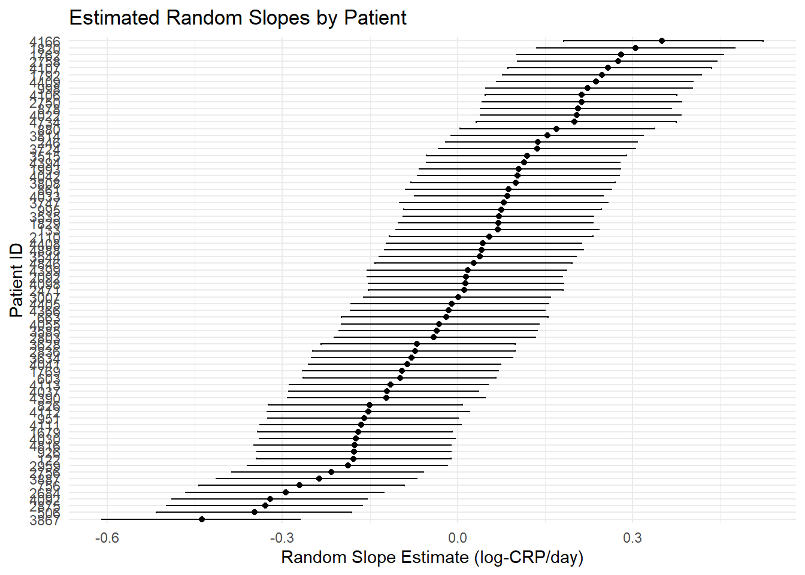
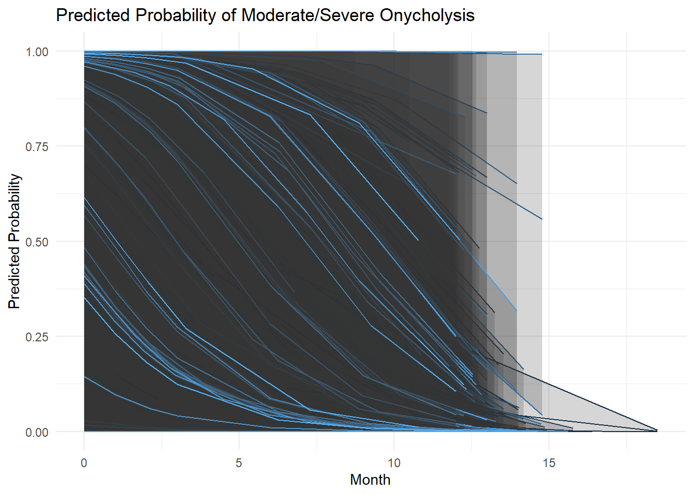

Week 10: Goldilocks
Learnings
- Outcomes
– LO2: Demonstrate how to specify and fit simple Bayesian models with appropriate attention to the role of the prior distribution and the data model.
– LO4: Demonstrate proficiency in using statistical software packages (R) to specify and fit models, assess model fit, detect and remediate non-convergence, and compare models.
– LO5: Engage in specifying, checking and interpreting Bayesian statistical analyses in practical problems using effective communication with health and medical investigators.
- Objectives
By the end of this week you should be able to:
– Gain insight into different versions of the partial pooling model.
– Construct Bayesian hierarchical models for binary outcome.
– Interpret real-life clustered data problems in Bayesian context.
Partial Pooling with Random Slope & Intercept
Recall the C-reactive protein (CRP) data, where we are interested in modelling the daily progression of C-reactive protein levels in patients admitted to the intensive care unit during the first six days following admission. Since each patient has multiple CRP measurements over time, and we expect substantial variability between patients in their baseline inflammation levels, we use a Bayesian hierarchical (multilevel) model, such as in our last lecture we used the partial pooling model with a random intercept to account for individual differences while borrowing strength across the patient population.
Now, what if we are interested to know different types of heterogeneous effects that may arise from the clustering. For example, we want to allow both varying baseline CRP levels and also its rate of change over time to differe among patients. To address this we can use a another version of partial pooling, where both intercepts and slopes vary by patient.
In the random intercept and slope model, we allow both (i) the intercept (baseline CRP level on day 0 or 1) and (ii) the slope (how CRP changes across days in the ICU) to vary by patient.
This accounts for the biological intuition that some patients start with higher or lower CRP levels and the trajectory of inflammation (rise or fall of CRP over time) can differ across individuals. This kind of model captures heterogeneous responses over time while still sharing information across patients through partial pooling.
Model Specification
In this hierarchical Bayesian model, we aim to describe how C-reactive protein (CRP) levels (in log scale) evolve over time in critically ill patients admitted to the ICU. The model accounts for both population-level effects and patient-specific deviations, allowing us to flexibly capture heterogeneity in inflammation patterns across individuals. The observed CRP level (in log scale) for patient \(j\) on day \(i\), denoted \(\text{log(CRP)}_{ij}\), is modelled as normally distributed around a mean, say \(\mu_{ij}\), with constant residual variance \(\sigma^2\). This forms the first level of the model, reflecting within-patient variation.
The mean
\[ \mu_{ij}=\beta_0 + \beta_{0j} + (\beta_1 + \beta_{1j}) \cdot \text{Day}_{ij} + \mathbf{x}_{ij} \boldsymbol{\beta} \]
represents the expected log-CRP level and is composed of several components. It includes a global intercept \(\beta_0\), a patient-specific random intercept \(\beta_{0j}\), a global slope for time \(\beta_1\) (reflecting the average effect of ICU day), and a patient-specific random slope \(\beta_{1j}\), which captures how the rate of CRP change over time varies across patients. The model also includes a set of fixed effects \(\boldsymbol{\beta}\) corresponding to patient-level covariates such as age, sex, sepsis category, antibiotic timing, and ICU discharge status. These covariates are encoded in the vector \(\mathbf{x}_{ij}\), and their contribution to the mean is given by the inner product \(\mathbf{x}_{ij}\boldsymbol{\beta}\).
At the second level of the model, the random intercept \(\beta_{0j}\) and random slope \(\beta_{1j}\) for each patient are modeled jointly as a bivariate normal distribution centered at zero. This distribution is parameterised by a variance-covariance matrix that includes the variance of the random intercepts \(\sigma_0^2\), the variance of the random slopes \(\sigma_1^2\), and the correlation \(\rho\) between them. This structure allows for partial pooling: each patient’s intercept and slope are informed not only by their own data but also by the overall distribution of intercepts and slopes across all patients. The correlation term \(\rho\) enables us to capture whether patients with higher baseline CRP levels tend to experience faster or slower changes in inflammation over time.
We write the hierarchical structure of the random slope and intercept model as follows:
\[ \begin{aligned} \text{log(CRP)}_{ij} &\sim N(\beta_0 + \beta_{0j} + (\beta_1 + \beta_{1j}) \cdot \text{Day}_{ij} + \mathbf{x}_{ij} \boldsymbol{\beta}, \sigma^2) \\ \begin{bmatrix} \beta_{0j} \\ \beta_{1j} \end{bmatrix} &\sim \text{MVN}\left( \begin{bmatrix} 0 \\ 0 \end{bmatrix}, \Sigma = \begin{bmatrix} \sigma_0^2 & \rho \sigma_0 \sigma_1 \\ \rho \sigma_0 \sigma_1 & \sigma_1^2 \end{bmatrix} \right) \end{aligned} \]
where,
– \(\beta_0\): global intercept. – \(\beta_1\): global slope for time (Day). – \(\beta_{0j}\), \(\beta_{1j}\): patient-specific random deviations (random effects). – \(\boldsymbol{\beta}\): fixed effects for other covariates (e.g. Age, Sex, and Antibiotic). – \(\sigma\): residual standard deviation. – The random effects for intercept and slope are correlated via \(\rho\).
Here, each patient has their own intercept and slope, but those are not estimated in isolation. Instead, patient-specific estimates are regularised (shrunken) toward the population average. This balances overfitting (too much flexibility) and underfitting (forcing everyone to follow the same trend).
We can see, a random intercept allows each patient to have a unique baseline CRP on ICU Day 1. Whereas, a random slope allows each patient to have their own CRP trajectory across the six ICU days, e.g., fast responders vs. slow responders vs. worsening patients. Furthermore, the fixed effects (age, sex, antibiotics, etc.) apply consistently across patients and help explain variability beyond time and patient ID.
One of the key benefits of using random slope over random intercept alone is to captures individual disease dynamics, i.e., in our example the different rates of inflammation. It also provides more accurate modelling of time trends without assuming identical change for all and provides better predictions, especially over time within individuals.
Prior Distributions
Now let us discuss the model and related prior distributions and explain the priors step-by-step: \(\beta_0, \beta_1 \sim \mathcal{N}(0, 10^2)\) are mainly the weakly informative priors. The prior \(\boldsymbol{\beta} \sim \mathcal{N}(0, 10^2 I)\) is placed on the coefficients of other fixed effects: age, sex, sepsis type, antibiotic timing, and discharge status. Again, it’s weakly informative and assumes we don’t have strong prior knowledge, but that extremely large effect sizes are unlikely.
Now for the random effects (patient-level intercept and slope), i.e.,
\[ \begin{bmatrix} \beta_{0j} \\ \beta_{1j} \end{bmatrix} \sim \text{MVN} \left( \begin{bmatrix} 0 \\ 0 \end{bmatrix}, \Sigma \right) \]
This is a bivariate normal distribution, modelling the patient-specific deviations in intercept (\(\beta_{0j}\)) and slope (\(\beta_{1j}\)) from the global values. It allows each patient to have their own baseline CRP and rate of change over time. The covariance matrix \(\Sigma\) is:
\[ \Sigma = \begin{bmatrix} \sigma_0^2 & \rho \sigma_0 \sigma_1 \\ \rho \sigma_0 \sigma_1 & \sigma_1^2 \end{bmatrix} \]
Note that options for \(\Sigma\) includes the Inverse-Wishart distribution, which is the conjugate prior for the covariance matrix of a multivariate/bivariate normal model, and priors set not directly on the covariance matrix but on a decomposition of the matrix, in particular, the Cholesky decomposition can be used in this context. Hence, this structure allows us to estimate variability in baseline CRP (\(\sigma_0\)), CRP trajectory over time (\(\sigma_1\)) and to learn the correlation (\(\rho\)) between baseline and change. Now, we use half-Cauchy distribution for \(\sigma_0\), \(\sigma_1\) and \(\sigma\). As we have already discussed in our previous modules that half-Cauchy is commonly used as a weakly informative prior on scale parameters.
Now, for the correlation (\(\rho\)), LKJ (Lewandowski–Kurowicka–Joe) prior is a standard prior in Bayesian hierarchical models (Lewandowski, Kurowicka, and Joe (2009)). And a shape parameter of 2, gently favors correlations near 0 (i.e., assumes weak prior belief in strong correlation), but still allows the model to estimate a strong correlation if present in the data.
Hence, we can write these as:
\[ \begin{aligned} \beta_0, \beta_1 &\sim N(0, 10^2); \\ \boldsymbol{\beta} &\sim N(0, 10^2 I) \\ \sigma, \sigma_0, \sigma_1 &\sim \text{Half-Cauchy}(0, 1); \\ \rho &\sim \text{LKJ}(2) \end{aligned} \]
Based on the equations we can draw the DAG as:
R-Stan (brm) Example
Now we will explore R code to apply these types of model for our data on C-reactive protein (CRP). We will develop the R code based on the DAG we developed. This model estimates CRP (in log scale) using a mix of demographic and clinical predictors while accounting for individual-level variation over time. It includes both fixed effects (shared across the population) and random effects (individual-specific intercepts and slopes for time, i.e., Day). The outcome is modeled assuming a Gaussian distribution, with an identity link function. A total of 432 observations from 72 individuals were analysed. To represent the partial pooling model with random slop and intercept model, we use (1 + Day | ID) inside the formula argument of brm function.
Code
library(tidyverse)
library(brms)
crp_data <- read.csv("crp_data_complete.csv")
crp_data <- tibble(
ID = crp_data$ID,
CRP = crp_data$crp,
CRP_log = log(crp_data$crp),
Day = crp_data$day,
Antibiotic = as.factor(crp_data$antib_1h),
Age = crp_data$age,
Sex = as.factor(crp_data$SEX),
Sepsis = as.factor(crp_data$SEPSIS),
Discharg = as.factor(crp_data$discharge_r)
)
priors <- c(
prior(normal(0, 10), class = "Intercept"),
prior(normal(0, 10), class = "b"),
prior(cauchy(0, 1), class = "sd"),
prior(lkj(2), class = "cor"),
prior(cauchy(0, 1), class = "sigma")
)
crp_model_random_slope <- brm(
formula = CRP_log ~ Day + Age + Sex + Antibiotic + (1 + Day | ID),
data = crp_data,
family = gaussian(),
prior = priors,
chains = 3,
cores = 3,
iter = 2000,
warmup = 1000,
seed = 1234,
control = list(adapt_delta = 0.95)
)
print(prior_summary(crp_model_random_slope, all = FALSE), show_df = FALSE)b ~ normal(0, 10)
Intercept ~ normal(0, 10)
L ~ lkj_corr_cholesky(2)
<lower=0> sd ~ cauchy(0, 1)
<lower=0> sigma ~ cauchy(0, 1)Code
summary(crp_model_random_slope) Family: gaussian
Links: mu = identity; sigma = identity
Formula: CRP_log ~ Day + Age + Sex + Antibiotic + (1 + Day | ID)
Data: crp_data (Number of observations: 432)
Draws: 3 chains, each with iter = 2000; warmup = 1000; thin = 1;
total post-warmup draws = 3000
Multilevel Hyperparameters:
~ID (Number of levels: 72)
Estimate Est.Error l-95% CI u-95% CI Rhat Bulk_ESS Tail_ESS
sd(Intercept) 0.62 0.07 0.48 0.78 1.00 1160 1756
sd(Day) 0.20 0.02 0.16 0.24 1.01 474 483
cor(Intercept,Day) -0.42 0.12 -0.63 -0.15 1.01 256 497
Regression Coefficients:
Estimate Est.Error l-95% CI u-95% CI Rhat Bulk_ESS Tail_ESS
Intercept 3.49 0.33 2.87 4.15 1.00 1317 1660
Day -0.11 0.03 -0.16 -0.06 1.01 572 757
Age -0.01 0.00 -0.01 0.00 1.00 1316 1698
SexMale -0.50 0.16 -0.80 -0.20 1.00 1040 1664
AntibioticYes -0.20 0.15 -0.49 0.09 1.00 829 1193
Further Distributional Parameters:
Estimate Est.Error l-95% CI u-95% CI Rhat Bulk_ESS Tail_ESS
sigma 0.41 0.02 0.38 0.44 1.00 1869 2348
Draws were sampled using sampling(NUTS). For each parameter, Bulk_ESS
and Tail_ESS are effective sample size measures, and Rhat is the potential
scale reduction factor on split chains (at convergence, Rhat = 1).In terms of population-level trends, CRP (in log scale) decreases significantly over time, with an average slope of -0.11 (95% credible interval: -0.16 to -0.06), indicating that inflammation, as measured by CRP, tends to reduce as patients progress through their hospital stay. Age has a small but consistent negative association with CRP, suggesting that older patients tend to have slightly lower CRP levels. Male patients also show significantly lower CRP compared to females, with an estimated difference of -0.5 (95% CI: -0.8 to -0.2). Antibiotic use is associated with a modest reduction in CRP, but the effect is not statistically conclusive.
The model includes random intercepts and slopes for each individual, capturing how baseline CRP and its trajectory over time differ from person to person. The estimated standard deviation of the intercepts is 0.62, and for the slopes (Day), it is 0.20, indicating meaningful between-subject variability. Importantly, the correlation between the intercept and the slope is -0.42, suggesting that individuals with higher baseline CRP levels tend to experience faster declines in CRP over time.
Lastly, the residual standard deviation (\(\sigma\)) is estimated at 0.41, reflecting the variability in CRP that remains unexplained after accounting for both fixed and random effects. Model diagnostics (e.g., Rhat ≈ 1 and high effective sample sizes) indicate good convergence and reliable posterior estimation.
Now we can plot both random intercepts and slops with their 95% credible interaval as follows:
Code
ranef_data <- ranef(crp_model_random_slope)$ID[, , "Intercept"] %>%
as.data.frame() %>%
rownames_to_column("ID") %>%
rename(Estimate = Estimate, Q2.5 = Q2.5, Q97.5 = Q97.5)
ranef_data$ID <- factor(ranef_data$ID, levels = ranef_data$ID[order(ranef_data$Estimate)])
ggplot(ranef_data, aes(x = ID, y = Estimate)) +
geom_point() +
geom_errorbar(aes(ymin = Q2.5, ymax = Q97.5), width = 0.2) +
coord_flip() +
labs(
title = "Estimated Random Intercepts by Patient",
x = "Patient ID",
y = "Random Intercept Estimate (log-CRP scale)"
) +
theme_minimal()
Code
##
slope_data <- ranef(crp_model_random_slope)$ID[, , "Day"] %>%
as.data.frame() %>%
rownames_to_column("ID") %>%
rename(Estimate = Estimate, Q2.5 = Q2.5, Q97.5 = Q97.5)
slope_data$ID <- factor(slope_data$ID, levels = slope_data$ID[order(slope_data$Estimate)])
ggplot(slope_data, aes(x = ID, y = Estimate)) +
geom_point() +
geom_errorbar(aes(ymin = Q2.5, ymax = Q97.5), width = 0.2) +
coord_flip() +
labs(
title = "Estimated Random Slopes by Patient",
x = "Patient ID",
y = "Random Slope Estimate (log-CRP/day)"
) +
theme_minimal()
To get the fitted lines for each individual we use the following R code:
Code
newdata <- crp_data %>%
select(ID, Day, Age, Sex, Sepsis, Antibiotic, Discharg) %>%
distinct()
fitted_values <- fitted(
crp_model_random_slope,
newdata = newdata,
re_formula = NULL,
summary = TRUE
)
fitted_df_log <- bind_cols(newdata, as_tibble(fitted_values))
p1 <- ggplot(fitted_df_log, aes(x = Day, y = Estimate, group = ID, color = ID)) +
geom_line() +
geom_ribbon(aes(ymin = Q2.5, ymax = Q97.5), alpha = 0.2) +
labs(
title = "CRP Trajectories (log scale) - Random Slope",
y = "Fitted CRP (log scale)",
x = "Day"
) +
theme_minimal() +
theme(legend.position = "none")
p1Partial Pooling with Only Random Slope
Using partial pooling with only a random slope (and a fixed intercept) is a more targeted modelling choice. It means we’re assuming all groups start at the same baseline level, but respond differently to a predictor or covariate. This version of the partial pooling model removes the random intercept \(\beta_{0j}\), leaving only a random slope \(\beta_{1j}\) for Day. Since there’s only one random effect, no correlation structure (like \(\rho\)) is required. The model assumes each patient has their own trajectory over time (slope), but shares the same intercept.
Model Specification
Based on the concept described above, we write the hierarchical model with prior specifications as follows:
\[ \begin{aligned} \text{log(CRP)}_{ij} &\sim N(\beta_0 + (\beta_1 + \beta_{1j}) \cdot \text{Day}_{ij} + \mathbf{x}_{ij} \boldsymbol{\beta}, \sigma^2) \\ \beta_0, \beta_1 &\sim N(0, 10^2) \\ \boldsymbol{\beta} &\sim N(0, 10^2 I) \\ \beta_{1j}|\sigma_1 &\sim N(0, \sigma_1^2) \\ \sigma_1, \sigma &\sim \text{Half-Cauchy}(0, 1) \end{aligned} \]
Which can be drawn using the following DAG:
From this DAG we can say, the outcome variable \(\text{log(CRP)}_{ij}\) assumes a normal distribution. The mean structure includes a global intercept (\(\beta_0\)) and global slope (\(\beta_1\)), both of which have normal priors with large variance (\(N(0, 10^2)\)), reflecting weakly informative prior. In addition to these fixed effects, the model includes covariates \(\mathbf{x}_{ij}\), which are associated with a coefficient vector \(\boldsymbol{\beta}\), also assumed to follow a multivariate normal prior with identity covariance scaled by \(10^2\).
To account for subject-level (or group-level) variation in the effect of time (e.g., “Day”), the model introduces a random slope \(\beta_{1j}\), which allows the slope of “Day” to vary by group \(j\). This random slope is drawn from a normal distribution with standard deviation \(\sigma_1\), which itself follows a Half-Cauchy(0,1) prior to constrain it to positive values and reflect uncertainty about its scale.
The model also includes a residual standard deviation parameter \(\sigma\), representing unexplained variability in the outcome. Like \(\sigma_1\), this parameter is given a Half-Cauchy(0,1) prior.
R-Stan (brm) Example
We use following R code to run the partial pooling model with only random slope, where we consider writing (0 + Day | ID) formula argument using brm function.
Code
library(tidyverse)
library(brms)
crp_data <- read.csv("crp_data_complete.csv")
crp_data <- tibble(
ID = crp_data$ID,
CRP = crp_data$crp,
CRP_log = log(crp_data$crp),
Day = crp_data$day,
Antibiotic = as.factor(crp_data$antib_1h),
Age = crp_data$age,
Sex = as.factor(crp_data$SEX),
Sepsis = as.factor(crp_data$SEPSIS),
Discharg = as.factor(crp_data$discharge_r)
)
priors <- c(
prior(normal(0, 10), class = "Intercept"),
prior(normal(0, 10), class = "b"),
prior(cauchy(0, 1), class = "sd"), # for random slope
prior(cauchy(0, 1), class = "sigma") # residual SD
)
crp_model_random_slope_only <- brm(
formula = CRP_log ~ Day + Age + Sex + Antibiotic + (0 + Day | ID),
data = crp_data,
family = gaussian(),
prior = priors,
chains = 3,
cores = 3,
iter = 2000,
warmup = 1000,
seed = 1234,
control = list(adapt_delta = 0.95)
)
print(prior_summary(crp_model_random_slope_only, all = FALSE), show_df = FALSE)b ~ normal(0, 10)
Intercept ~ normal(0, 10)
<lower=0> sd ~ cauchy(0, 1)
<lower=0> sigma ~ cauchy(0, 1)Code
summary(crp_model_random_slope_only) Family: gaussian
Links: mu = identity; sigma = identity
Formula: CRP_log ~ Day + Age + Sex + Antibiotic + (0 + Day | ID)
Data: crp_data (Number of observations: 432)
Draws: 3 chains, each with iter = 2000; warmup = 1000; thin = 1;
total post-warmup draws = 3000
Multilevel Hyperparameters:
~ID (Number of levels: 72)
Estimate Est.Error l-95% CI u-95% CI Rhat Bulk_ESS Tail_ESS
sd(Day) 0.18 0.02 0.15 0.21 1.00 653 760
Regression Coefficients:
Estimate Est.Error l-95% CI u-95% CI Rhat Bulk_ESS Tail_ESS
Intercept 3.53 0.21 3.12 3.93 1.00 1722 2006
Day -0.11 0.02 -0.16 -0.06 1.00 685 1087
Age -0.01 0.00 -0.01 -0.00 1.00 1723 1803
SexMale -0.55 0.10 -0.74 -0.36 1.00 1676 1983
AntibioticYes -0.17 0.10 -0.36 0.01 1.00 1585 1992
Further Distributional Parameters:
Estimate Est.Error l-95% CI u-95% CI Rhat Bulk_ESS Tail_ESS
sigma 0.50 0.02 0.47 0.54 1.00 3054 2380
Draws were sampled using sampling(NUTS). For each parameter, Bulk_ESS
and Tail_ESS are effective sample size measures, and Rhat is the potential
scale reduction factor on split chains (at convergence, Rhat = 1).Code
slope_data <- ranef(crp_model_random_slope_only)$ID[, , "Day"] %>%
as.data.frame() %>%
rownames_to_column("ID") %>%
rename(
Estimate = Estimate,
Q2.5 = Q2.5,
Q97.5 = Q97.5
)
slope_data$ID <- factor(slope_data$ID, levels = slope_data$ID[order(slope_data$Estimate)])
ggplot(slope_data, aes(x = ID, y = Estimate)) +
geom_point() +
geom_errorbar(aes(ymin = Q2.5, ymax = Q97.5), width = 0.2) +
coord_flip() +
labs(
title = "Estimated Random Slopes by Patient",
x = "Patient ID",
y = "Random Slope Estimate (log-CRP/day)"
) +
theme_minimal()Code
newdata <- crp_data %>%
select(ID, Day, Age, Sex, Sepsis, Antibiotic, Discharg) %>%
distinct()
fitted_values <- fitted(
crp_model_random_slope_only,
newdata = newdata,
re_formula = NULL,
summary = TRUE
)
fitted_df_log <- bind_cols(newdata, as_tibble(fitted_values))
ggplot(fitted_df_log, aes(x = Day, y = Estimate, group = ID, color = ID)) +
geom_line() +
geom_ribbon(aes(ymin = Q2.5, ymax = Q97.5), alpha = 0.2) +
labs(
title = "CRP Trajectories (log scale) - Random Slope Only",
y = "Fitted CRP (log scale)",
x = "Day"
) +
theme_minimal() +
theme(legend.position = "none")In our model, we estimate two main variance parameters that capture different sources of variability in the CRP measurements. First, the standard deviation of the random slope for Day across individuals is estimated to be about 0.18, with a 95% credible interval ranging from 0.15 to 0.21. This tells us that the effect of time (Day) on CRP levels varies somewhat from person to person. While there is a general trend captured by the global slope, individual trajectories differ around this average, reflecting meaningful heterogeneity in how CRP changes over time for different subjects.
The residual standard deviation, which represents variability in CRP that is not explained by either the fixed effects or the random slopes, is estimated to be approximately 0.5, with a 95% credible interval between 0.47 and 0.54. This residual variation captures other sources of noise or unexplained fluctuations in CRP measurements. Despite including several predictors and accounting for individual differences in the time effect, there remains substantial unexplained variation in CRP levels.
Both variance estimates are supported by high effective sample sizes and Rhat values equal to 1, indicating that our sampling and model convergence are reliable. Overall, these parameters highlight the importance of accounting for individual-level differences in the effect of time, as well as recognizing the inherent variability in CRP measurements that cannot be fully explained by our predictors.
Partial Pooling with Binary Outcome
In this section, we will explain the partial pooling model, when the outcome variable is binary. The hierarchy related to binary outcome variable model is same as we have already discussed earlier in this module. But the main difference is the use of logistic type hierarchical models. Let us now explain more using an example related to a trial related to toe nail infection.
Toe Nail Data
The toenail dataset originates from a randomised, double-blinded clinical trial investigating treatments for fungal toenail infection. A total of 378 subjects/patients were randomly assigned to one of two oral antifungal therapies: 250 mg/day of terbinafine or 200 mg/day of itraconazole. Patients were assessed at seven scheduled visits: weeks 0, 4, 8, 12, 24, 36, and 48. The primary outcome of interest is onycholysis, a condition characterised by the separation of the nail plate from the nail bed. For descriptive purposes and alignment with the study’s objectives, the visit weeks were converted to months.
Code
library(tidyverse)
library(skimr)
toe_data <- read.csv("toenail_data.csv")
toe_data$treatment <- factor(toe_data$treatment, levels = c(1, 0), labels = c("Terbinafine", "Itraconazole"))
toe_data$outcome <- factor(toe_data$outcome, levels = c(0, 1), labels = c("None or Mild", "Moderate or Severe"))
toe_data <- tibble(
Patient_ID = toe_data$patient,
Onycholysis = toe_data$outcome,
Treatment = toe_data$treatment,
Visit = toe_data$visit,
Month = toe_data$month
)
summary_table <- toe_data %>%
group_by(Treatment, Onycholysis) %>%
summarise(
Count = n(),
Avg_Month = mean(Month, na.rm = TRUE),
.groups = "drop"
) %>%
group_by(Treatment) %>%
mutate(Proportion = Count / sum(Count))
library(kableExtra)
kable(summary_table, digits = 2, caption = "Summary of Toe Data by Treatment and Onycholysis") %>%
kable_styling(full_width = FALSE)| Treatment | Onycholysis | Count | Avg_Month | Proportion |
|---|---|---|---|---|
| Terbinafine | None or Mild | 777 | 5.28 | 0.80 |
| Terbinafine | Moderate or Severe | 194 | 2.21 | 0.20 |
| Itraconazole | None or Mild | 723 | 5.30 | 0.77 |
| Itraconazole | Moderate or Severe | 214 | 2.74 | 0.23 |
We can summarised the severity of onycholysis (nail separation) by treatment group across all visits. For both itraconozole and terbinafine, the majority of observations fell into the mnne or mild category. In the itraconazole group, about 77% of visits showed none or mild onycholysis, with an average visit time of 5.3 months. The remaining 23% were classified as moderate or severe, and these cases tended to occur earlier, averaging around 2.7 months. Similarly, in the terbinafine group, about 80% of visits were none or mild, with a mean timing of 5.3 months. The moderate or severe cases made up 20%, occurring earlier on average, at around 2.2 months. These summary statistics suggest that more severe symptoms tend to be reported earlier in treatment, while milder outcomes are more common later on. This trend appears consistent across both treatment groups, though terbinafine shows a slightly higher proportion of mild cases.
Now, we will develop a model that can provide us more insights on the relationships.
Model Development
We have repeated measurements for each patient over time, which are likely to be correlated within individuals. To appropriately account for this intra-subject correlation, we employ a partial pooling model, especifically, a hierarchical model with random (varying) intercepts across patients. Here, the outcome variable is onycholysis, indicating the severity of nail separation. The exposure variable is the treatment group (itraconozole or terbinafine). We also include Month (time since baseline) as a covariate to capture temporal changes in outcome. The model can be written mathematically as:
\[ \text{Onycholysis}_{ij} \sim \text{Bernoulli}(p_{ij}) \]
\[ \text{logit}(p_{ij}) = \beta_0 + \beta_{0j} + \beta_1 \cdot \text{Treatment}_{ij} + \beta_2 \cdot \text{Month}_{ij} \]
\[ \beta_{0j}|\sigma_0 \sim N(0, \sigma_0^2); \quad \sigma_0 \sim \text{Half-Cauchy}(0,1) \]
where, \(i\) is the repeated measurements (visits), and \(j\) indexes patients. Following our learning in previous lecture, the term \(\beta_0\) is the global intercept, and \(\beta_{0j}\) is the random (or varying) intercept for patient \(j\). The term \(\beta_1\) is the treatment effect, and \(\sigma_0^2\) captures the between-patient variability. You can see, this model assumes that each patient has their own baseline risk (via \(\beta_{0j}\)), while sharing information across the entire population through partial pooling.
R-Stan (brm) Example
Based on the model we developed for the toenail data and research aims, we will now impliment the hierarchical model using R code.
Code
library(tidyverse)
library(brms)
toe_data <- read.csv("toenail_data.csv")
toe_data$treatment <- factor(toe_data$treatment, levels = c(0, 1), labels = c("Itraconozole", "Terbinafine"))
toe_data$outcome <- factor(toe_data$outcome, levels = c(0, 1), labels = c("None or Mild", "Moderate or Severe"))
toe_data <- tibble(
Patient_ID = toe_data$patient,
Onycholysis = toe_data$outcome,
Treatment = toe_data$treatment,
Visit = toe_data$visit,
Month = toe_data$month
)
priors <- c(
prior(normal(0, 10), class = "Intercept"),
prior(normal(0, 10), class = "b"),
prior(cauchy(0, 1), class = "sd")
)
onycholysis_model <- brm(
formula = Onycholysis ~ Treatment + Month + (1 | Patient_ID),
data = toe_data,
family = bernoulli(link = "logit"),
prior = priors,
chains = 3,
cores = 3,
iter = 2000,
warmup = 1000,
seed = 1234,
control = list(adapt_delta = 0.95)
)
print(prior_summary(onycholysis_model, all = FALSE), show_df = FALSE)b ~ normal(0, 10)
Intercept ~ normal(0, 10)
<lower=0> sd ~ cauchy(0, 1)Code
summary(onycholysis_model) Family: bernoulli
Links: mu = logit
Formula: Onycholysis ~ Treatment + Month + (1 | Patient_ID)
Data: toe_data (Number of observations: 1908)
Draws: 3 chains, each with iter = 2000; warmup = 1000; thin = 1;
total post-warmup draws = 3000
Multilevel Hyperparameters:
~Patient_ID (Number of levels: 294)
Estimate Est.Error l-95% CI u-95% CI Rhat Bulk_ESS Tail_ESS
sd(Intercept) 4.09 0.39 3.38 4.94 1.00 820 1428
Regression Coefficients:
Estimate Est.Error l-95% CI u-95% CI Rhat Bulk_ESS
Intercept -1.46 0.44 -2.34 -0.66 1.01 545
TreatmentTerbinafine -0.53 0.58 -1.67 0.60 1.01 531
Month -0.46 0.04 -0.53 -0.38 1.00 2807
Tail_ESS
Intercept 943
TreatmentTerbinafine 935
Month 2606
Draws were sampled using sampling(NUTS). For each parameter, Bulk_ESS
and Tail_ESS are effective sample size measures, and Rhat is the potential
scale reduction factor on split chains (at convergence, Rhat = 1).As we have discuss in our previous module, brm output provides the posterior estimates in log-odds scale. The summary results above indicates the posterior estimates in log-odds. Hence, we can use the following R code to convert it into odds ratio (i.e., \(\exp(.)\)). The interpretation of the posterior estimates is similar to what we explained for a Bayesian logistic regression using odds ratios.
Code
library(gtsummary)
onycholysis_model %>%
tbl_regression(exponentiate = TRUE) %>%
bold_labels()| Characteristic | exp(Beta) | 95% CI |
|---|---|---|
| Treatment | ||
| Itraconozole | — | — |
| Terbinafine | 0.59 | 0.19, 1.82 |
| Month | 0.63 | 0.59, 0.68 |
| Abbreviation: CI = Credible Interval | ||
Code
intercept_data <- ranef(onycholysis_model)$Patient_ID[, , "Intercept"] %>%
as.data.frame() %>%
rownames_to_column("Patient_ID") %>%
rename(
Estimate = Estimate,
Q2.5 = Q2.5,
Q97.5 = Q97.5
)
intercept_data$Patient_ID <- factor(intercept_data$Patient_ID, levels = intercept_data$Patient_ID[order(intercept_data$Estimate)])
#p1 <- ggplot(intercept_data, aes(x = Patient_ID, y = Estimate)) +
# geom_point() +
# geom_errorbar(aes(ymin = Q2.5, ymax = Q97.5), width = 0.2) +
# coord_flip() +
# labs(
# title = "",
# x = "Patient ID",
# y = "Estimate (Log-Odds)"
# ) +
# theme_minimal()
#intercept_data <- intercept_data %>%
# mutate(Significant = ifelse(Q2.5 > 0 | Q97.5 < 0, "Yes", "No"))
#p2 <- ggplot(intercept_data, aes(x = Patient_ID, y = Estimate, color = Significant)) +
# geom_point() +
# geom_errorbar(aes(ymin = Q2.5, ymax = Q97.5), width = 0.2) +
# coord_flip() +
# labs(
# title = "Significance Highlighted",
# x = "Patient ID",
# y = "Estimate (Log-Odds)",
# color = "Significant?"
# ) +
# theme_minimal()
#library(gridExtra)
#grid.arrange(p1,p2,col=2)
#library(patchwork)
#p1 + p2 +
# plot_layout(ncol = 2) +
# plot_annotation(title = "Random (Varying) Effects")
#ggplot(intercept_data, aes(y = Patient_ID, x = Estimate)) +
# geom_point() +
# geom_errorbar(aes(ymin = Q2.5, ymax = Q97.5), width = 0.2) +
# coord_flip() +
# labs(
# title = "",
# y = "Patient ID",
# x = "Estimate"
# ) +
# theme_minimal()
library(tidyverse)
library(brms)
newdata <- toe_data %>%
select(Patient_ID, Month, Treatment) %>%
distinct()
fitted_values <- fitted(
onycholysis_model,
newdata = newdata,
re_formula = NULL, # Includes random effects
summary = TRUE
)
fitted_df <- bind_cols(newdata, as_tibble(fitted_values))
ggplot(fitted_df, aes(x = Month, y = Estimate, group = Patient_ID, color = Patient_ID)) +
geom_line() +
geom_ribbon(aes(ymin = Q2.5, ymax = Q97.5), alpha = 0.2) +
labs(
title = "Predicted Probability of Moderate/Severe Onycholysis",
y = "Predicted Probability",
x = "Month"
) +
theme_minimal() +
theme(legend.position = "none") 
Summary
In this lecture, we explored various hierarchical modelling approaches using partial pooling. We began with models that include both random (or varying) intercepts and slopes, followed by models with only random slopes, illustrating how these structures account for individual-level variation. We then extended the framework to binary outcomes, demonstrating how to implement Bayesian logistic hierarchical (or mixed-effects) models. Throughout, we provided practical examples and R code to help apply these methods to real-world data. These models allow us to make more accurate and generalisable inferences by borrowing strength across groups while accounting for within-group differences.
Live tutorial and discussion
The final learning activity for this week is the live tutorial and discussion. This tutorial is an opportunity for you to to interact with your teachers, ask questions about the course, and learn about biostatistics in practice. You are expected to attend these tutorials when possible for you to do so. For those that cannot attend, the tutorial will be recorded and made available on Canvas. We hope to see you there!
Tutorial Exercises
Solutions will be provided later after the tutorial.